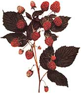

Herbs Of Summer
June/July 1993
HERBALIST'S NOTEBOOK
by Corinne Martin
Raspberry
It is 5 A.M. and I'm hoping to foil the bugs and get home before the heat starts up again. Along the last bend in the road-where the surface is still soil rather than asphalt-raspberry grows right up to the cleared roadway. It is tall and full of fruit, and I pop a few juicy berries in my mouth as I pick. Bullfrogs twang, and the birds I've disturbed start up again. Quietly I continue gathering.
Description:
Raspberry is a prickly stemmed, spreading plant that bears edible fruit common to roadsides, thickets, and disturbed areas. Several species are indigenous to the Northeast. The wild red raspberry, Rubus idaeus, is common to roadsides and clearings and is the official raspberry of herbal tradition. Raspberry leaves are alternate and divided, with three to five sharply and irregularly toothed leaflets. They are bright green, often with whitish undersides, and occur along a stiff, prickly stem. These stems are often arched and form dense thorny thickets. Plants may grow as high as six or seven feet, and raspberry's flowers are white or cream-colored, with five regular petals. (The petals and sepals are roughly the same length.) Blossoms, approximately 1/2" wide, appear in late spring and early summer. The raspberry's fruit is a soft, multi-segmented berry that is edible (more than just edible-delicious!) and ripens in mid-to late summer. The berries are juicy and sweet, with fleshy fruit surrounding many seeds; they make wonderful wild jams, jellies, and syrups.
Medicinal Uses:
Raspberry leaves are astringent and tonic, and have a special affinity for tissues of the female reproductive system. A tea of raspberry leaves helps tone the muscles of the uterus and has been used for centuries to prepare the system for childbirth. Raspberry tea can also be used to reduce heavy menstrual bleeding and, in general, to tone and normalize the reproductive system's functions. Raspberry leaves and root bark can be used, too, to help control diarrhea, because its astringency effectively tones inflamed or irritated tissues. In this case, other species of raspberry can be used interchangeably, because all share the same properties of astringency. (If your diarrhea persists, of course, you should always call your doctor for a checkup.)
Harvesting:
Wear thick protective gloves when gathering raspberry. Cut leaves from stems whenever the plant is in full growth, and especially when it's flowering. Handle carefully and spread to dry on screens, baskets, or paper bags. To use the root bark, dig up medi um-size plants after leafy material has died during the fall. Wash roots carefully and strip off the outer bark. Spread out to dry on screens or baskets, and store when dry. To help control di arrhea, cut bark strips into small pieces for tea, or place powdered herb in a blender and mix with honey.
Dosages:
Raspberry is water soluble and works fine as an infusion. Use one teaspoon of chopped dried leaves per one cup of boiling water, steep five to 10 minutes, and drink two or three times daily. A tincture, made from the fresh or dried leaves, can be added to other herbs that are used to aid the female reproductive system, such as squawvine and motherwort. To use the root bark for diarrhea, simmer one teaspoon of root in 1 1/2 cups of water for 10 minutes; strain and drink every two hours.
Sweet Fern
Down by the development road, there's a cleared area where trees were taken down. However, it is now starting to become lush with bright new growth. The breeze blows wonderful s cents-pine, dew-covered earth, and the strong, deep, heady smell of sweet fern. As I start to gather leaves, I find deer tracks and figure that the deer must come down here at night, after the construction crew has left and all is quiet, to stand like I do now, looking at all the changes. l imagine that they make new plans, or maybe they just wait, like I do, to see how much the development changes things. Maybe they can adapt. l worry for them, though.
Description:
Sweet fern is a low growing, deciduous shrub that is extremely aromatic when crushed. It is generally found in dry soil along roadsides and in fields along the edges of forest land. Sweet fern's leaves are alternate and occur along stiff, woody stems. The leaf margins are wavy and fernlike (hence the name), and the dark green leaves, which grow as long as six inches, feel somewhat oily when crushed. Sweet fern bears fruit in the form of a bristly, light-green seed capsule that can be found on the plant in the fall. Plants grow as tall as five feet.
Medicinal Uses:
Externally, sweet fern has been used to relieve itching and irritation from skin conditions such as poison ivy, general rashes, insect bites, and shingles. Fresh leaves can also be crushed and rubbed onto the skin to keep away insects for a short period of time. Internally, sweet fern acts as a stringent and is useful for mild diarrhea, stomach cramps, and indigestion. It's also useful as a mouthwash to help relieve gum inflammations and mouth sores. Not much more is presently known about sweet fern's actions because it hasn't yet been studied intensively. It has, however, had repeated use in folklore remedies in the Northeast.
Harvesting:
Cut the plant's leafy twigs any time during its growing season, spring through early fall. Remove individual leaves from the twigs, and dry by spreading them out on screens or other appropriate material. Or, bundle the leafy twigs to dry, and strip the dried leaves for storage.
Dosages:
Externally, a strong tea of sweet-fern leaves can be applied to the affected areas of skin on clean cloth several times a day. If a whole-body rash is evident, fill a bathtub with the strong tea, and soak your body for 20 minutes several times a day. Internally, you can ingest a tea made with one rounded teaspoon of dried leaves to one cup of boiling water. Steep the tea for 10 minutes and drink several times a day.
Editor's note: Corinne Martin, a graduate of the Institute of Traditional Herbal Medicine in Santa Fe, NM, is a certified clinical herbalist who has studied plants for over a decade. This passage is adapted from
Earthmagic: Finding and Using Medicinal Herbs,
available postpaid for $17.45 from The Countryman Press (P.O. Box 175, Woodstock, VT 05091; 800/245-4151).
|
 The best places to find raspberry are along roadsides, thickets, and clearings. |
 |
|